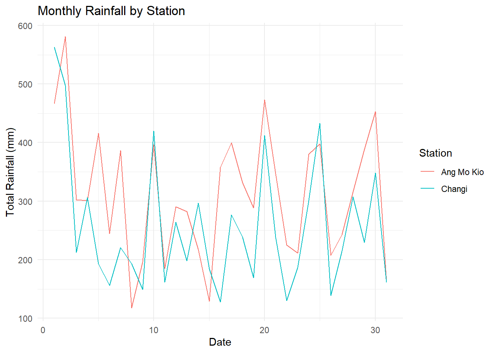
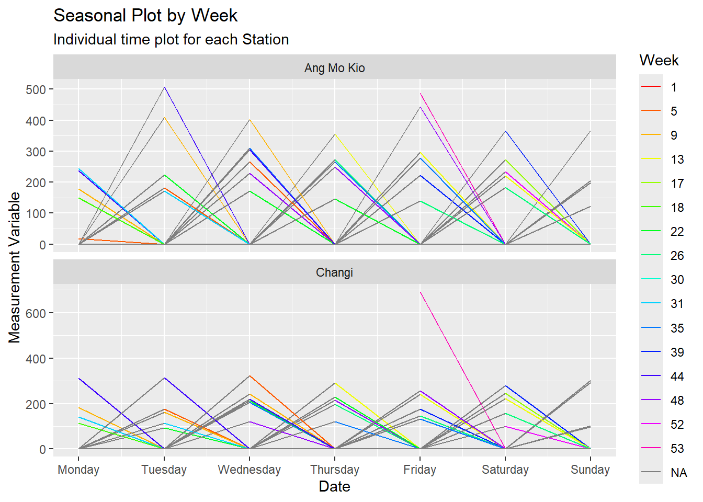

rm(list=ls())clustering
Introduction
In this article, we will reviewing and exploring the timetk and tidyvert family R packages, where will be conducting an overall comparison analysis to look at how the different collection work for time series forecasting using the targeted dataset. The article would be spitted into two article where the the first article would be about the different in data manipulation and feature selection method for timetk against tidyvert. Whereas in the second article would be on the reviewing of the forecasting methodology between timetk and tidyvert
For part 1 of the series of the article, in the first section of the article, we would looking into the current techniques used by tidyvert collection on how the data structure is being set up to perform data cleaning and wrangling after the extraction of dataset via web scrapping. After which, we will be reviewing the ability to perform feature engineering to look at how time series features, decompositions, statistical summaries and convenient visualizations could be perform by tidyvert collection.
In the next section of the article, we would be looking at the same concept but with the use of the timetk collection instead. Lastly, we will be reviewing both collection to analysis its similarities vs difference as well the strengthen and cases to use individual collection.
Setting up environment
We would first start with setting up the environment and installation of the packages required for data transformation using R. To ensure that we had cleared the environment to perform data manipulation, we would remove prior R object using the code below.
pacman::p_load(tidyverse, naniar, imputeTS, DT, knitr, lubridate,
ggplot2, patchwork, ggthemes,
tseries, ggHoriPlot,dplyr,
TSclust, fable, dtwclust, dendextend,
ggraph, plotly, factoextra, ggdendrosf,terra,gstat,tmap,viridis,tidyverse,dplyr)Installing package into 'C:/Users/Yizao/AppData/Local/R/win-library/4.3'
(as 'lib' is unspecified)Warning: package 'ggdendrosf' is not available for this version of R
A version of this package for your version of R might be available elsewhere,
see the ideas at
https://cran.r-project.org/doc/manuals/r-patched/R-admin.html#Installing-packagesWarning: unable to access index for repository http://www.stats.ox.ac.uk/pub/RWin/bin/windows/contrib/4.3:
cannot open URL 'http://www.stats.ox.ac.uk/pub/RWin/bin/windows/contrib/4.3/PACKAGES'Warning: 'BiocManager' not available. Could not check Bioconductor.
Please use `install.packages('BiocManager')` and then retry.Warning in p_install(package, character.only = TRUE, ...):Warning in library(package, lib.loc = lib.loc, character.only = TRUE,
logical.return = TRUE, : there is no package called 'ggdendrosf'Installing package into 'C:/Users/Yizao/AppData/Local/R/win-library/4.3'
(as 'lib' is unspecified)Warning: unable to access index for repository http://www.stats.ox.ac.uk/pub/RWin/bin/windows/contrib/4.3:
cannot open URL 'http://www.stats.ox.ac.uk/pub/RWin/bin/windows/contrib/4.3/PACKAGES'package 'tmap' successfully unpacked and MD5 sums checked
The downloaded binary packages are in
C:\Users\Yizao\AppData\Local\Temp\RtmpycCyeH\downloaded_packages
tmap installedWarning: package 'tmap' was built under R version 4.3.3Warning in pacman::p_load(tidyverse, naniar, imputeTS, DT, knitr, lubridate, : Failed to install/load:
ggdendrosf, tmapNext, we would run the following code chunk to validate if the required packages are installed. In the event that the packages are not installed, the code will install the missing packages. Afterwhich, the code would read the required package library onto the current environment.
if (!requireNamespace("pacman", quietly = TRUE)) {
install.packages("pacman")
}
pacman::p_load(
tsibble, # For working with tsibble data objects (time series tibbles)
feasts, # For features and statistics for time series analysis
ggplot2, # For creating plots
dplyr, # For data manipulation
lubridate, # For handling date-time data
tidyr, # For data tidying
readr, # For reading and writing data
zoo # For working with regular and irregular time series data
)
library(DT)Import dataset
weather = read_rds("data/weather_imputed_11stations.rds")
monsum = read_rds("data/monsumdata.rds")feasts
feasts package that is within the tidyvert collection is mainly used for the feature extraction and statistics for time series analysis. Also, feasts package provides a set of tools within the package that it is useful for the analysis of time series data.
Working with tidy temporal data that was previously set up using tsibble package, it is able to compute time series features, decomposition, statistical summaries and graphical visualizations. Features extraction is useful in the understanding of the behavior of time series data together with the closely integration of the tidy forecasting workflow used in the fable package.
Time series pattern (time plot)
To begin our analysis, we will first start with plotting a time plot using the auto_plot() function to look at the time plot of our dataset. auto_plot() automatically create an appropriate plot of choosen variable against time. In this case, it recognizes humidity level as a time series and produces a time plot as shown below.
From the figure below, we are able to observe that the humidity level fluctuate of high volatility that cause the understanding of the time plot to be rather challenging. In the next few section of the the article we will be looking into the different analysis of the time plot to try to identify if we are able to observed any trend/seasonal/cyclic pattern.
# Filter for specific stations
weather_filtered <- weather %>%
filter(Station %in% c("Admiralty", "Ang Mo Kio", "Changi"))
# Create a date column from Year and Month
weather_filtered$Date <- make_date(weather_filtered$Year, weather_filtered$Month)
# Summarize the total rainfall by month for each station
monthly_rainfall <- weather_filtered %>%
group_by(Station, Day) %>%
summarise(Total_Rainfall = sum(Daily.Rainfall.Total..mm., na.rm = TRUE))`summarise()` has grouped output by 'Station'. You can override using the
`.groups` argument.# Plot the data
ggplot(monthly_rainfall, aes(x = Day, y = Total_Rainfall, color = Station)) +
geom_line() +
labs(title = "Monthly Rainfall by Station", x = "Date", y = "Total Rainfall (mm)") +
theme_minimal()
Seasonal plot and seasonal subseries plot
With the feasts package, user is able to plot time plot based on the given time period in the dataset. We are also able to use the gg_season() and gg_subseries() to plot the season plot and there change in the seasonality respectively. Without the use of group_by() function, we are able to review the time plot of individual airport using gg_season() and gg_subseries() function. The code below would shown how we are able to use gg_season() to plot the different season plot based on individual airport. Similar technique is used for gg_subseries as well.
weather_tsibble <- weather_filtered %>%
mutate(Year = year(Date), Month = month(Date)) %>%
group_by(Station, Year, Month) %>%
summarise(Total_Rainfall = sum(Daily.Rainfall.Total..mm., na.rm = TRUE)) %>%
ungroup() %>%
mutate(Date = make_date(Year, Month)) %>%
select(-Year, -Month) %>%
as_tsibble(index = Date, key = Station)
# Seasonal decomposition using the feasts package
weather_decomposed <- weather_tsibble %>%
model(STL(Total_Rainfall ~ season(window = “periodic”)))
weather_tsibble <- weather_filtered %>%
mutate(Year = year(Date), Month = month(Date)) %>%
group_by(Station, Year, Month) %>%
summarise(Total_Rainfall = sum(Daily.Rainfall.Total..mm., na.rm = TRUE)) %>%
ungroup() %>%
mutate(Date = make_date(Year, Month)) %>%
select(-Year, -Month) %>%
as_tsibble(index = Date, key = Station)`summarise()` has grouped output by 'Station', 'Year'. You can override using
the `.groups` argument.# Seasonal decomposition using the feasts package
weather_decomposed <- weather_tsibble %>%
model(STL(Total_Rainfall ~ season(window = "periodic")))Warning: 2 errors (1 unique) encountered for STL(Total_Rainfall ~ season(window = "periodic"))
[2] .data contains implicit gaps in time. You should check your data and convert implicit gaps into explicit missing values using `tsibble::fill_gaps()` if required.weather_tsibble <- weather_tsibble %>%
mutate(Week = factor(isoweek(Date))) %>%
as_tsibble(index = Date, key = Station) %>%
fill_gaps() %>% # This will fill in the implicit gaps with NA by default
mutate(Total_Rainfall = replace_na(Total_Rainfall, 0)) # Replace NA with 0 or use another method to handle NAs
# Now, create the seasonal plots
seasonal_plots <- weather_tsibble %>%
gg_season(Total_Rainfall, period = "week") +
labs(title = "Seasonal Plot by Week",
subtitle = "Individual time plot for each Station",
y = "Measurement Variable") +
facet_wrap(~ Station, scales = "free_y", ncol = 1) +
aes(color = Week) +
scale_color_manual(values = rainbow(length(unique(weather_tsibble$Week))))Scale for colour is already present.
Adding another scale for colour, which will replace the existing scale.# Print the seasonal plots
print(seasonal_plots)
seasonal_plots <- weather_tsibble %>%
gg_season(Total_Rainfall, period = "week") +
labs(title = "Seasonal Plot by Week",
subtitle = "Individual time plot for each Station",
y = "Measurement Variable") +
facet_wrap(~ Station, scales = "free_y", ncol = 1) +
aes(color = Week) +
scale_color_manual(values = rainbow(length(unique(weather_tsibble$Week))))Scale for colour is already present.
Adding another scale for colour, which will replace the existing scale.print(seasonal_plots)Lag plots
Lag plot would be an one of the approach to look a correlation of lagged observation (vertical axis) against the current observation, with points colored hourly in a scatterplot format.The correlations of the lag plots shown with the code below using the gg_lag() are what that make up the ACF. Where the stronger the correlation the closer the scatterplot point will be to the dotted line